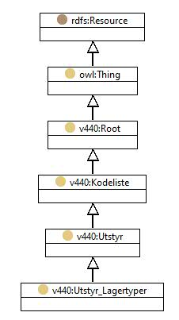

https://ontologi.atlas.vegvesen.no/v440/core/v440-owl#Utstyr_Lagertyper
Class v440:Utstyr_Lagertyper

rdf:type
-
 |
owl:Class |
|
rdfs:label
-
 |
Lagertyper
|
-
 |
Bearing types
|
|
rdfs:subClassOf
-
|
owl:oneOf
-
 |
[v440:Utstyr_Lagertyper_Deformasjonslager_armert_gummiblokk_forankret,
v440:Utstyr_Lagertyper_Fastlager_annet,
v440:Utstyr_Lagertyper_Deformasjonslager_armert_gummiblokk_forankret_med_sidestyring,
v440:Utstyr_Lagertyper_Annet_lager,
v440:Utstyr_Lagertyper_Deformasjonslager_asfaltpapp,
v440:Utstyr_Lagertyper_Glidelager_allsidig_kalott,
v440:Utstyr_Lagertyper_Rullelager_stopejern_flere_ruller,
v440:Utstyr_Lagertyper_Deformasjonslager,
v440:Utstyr_Lagertyper_Glidelager_med_sidestyring,
v440:Utstyr_Lagertyper_Glidelager_allsidig_armert_gummiblokk,
v440:Utstyr_Lagertyper_Glidelager_med_sidestyring_annet,
v440:Utstyr_Lagertyper_Deformasjonslager_gummiremse,
v440:Utstyr_Lagertyper_Glidelager_allsidig,
v440:Utstyr_Lagertyper_Glidelager_allsidig_annet,
v440:Utstyr_Lagertyper_Fastlager_stopejern,
v440:Utstyr_Lagertyper_Glidelager_allsidig_gummitopf_Tobe_el,
v440:Utstyr_Lagertyper_Fastlager,
v440:Utstyr_Lagertyper_Glidelager_allsidig_stopejern,
v440:Utstyr_Lagertyper_Glidelager_allsidig_armert_gummiblokk_forankret,
v440:Utstyr_Lagertyper_Fastlager_betongledd,
v440:Utstyr_Lagertyper_Fastlager_kalott,
v440:Utstyr_Lagertyper_Glidelager_med_sidestyring_armert_gummiblokk_forankret,
v440:Utstyr_Lagertyper_Rullelager,
v440:Utstyr_Lagertyper_Rullelager_stal_flere_ruller,
v440:Utstyr_Lagertyper_Glidelager_allsidig_stal,
v440:Utstyr_Lagertyper_Spesielt_hengebrulager,
v440:Utstyr_Lagertyper_Glidelager_med_sidestyring_kalott,
v440:Utstyr_Lagertyper_Rullelager_stal_1_rull,
v440:Utstyr_Lagertyper_Deformasjonslager_armert_gummiblokk,
v440:Utstyr_Lagertyper_Glidelager_med_sidestyring_stopejern,
v440:Utstyr_Lagertyper_Deformasjonslager_annet,
v440:Utstyr_Lagertyper_Glidelager_med_sidestyring_stal,
v440:Utstyr_Lagertyper_Rullelager_annet,
v440:Utstyr_Lagertyper_Rullelager_stopejern_1_rull,
v440:Utstyr_Lagertyper_Glidelager_med_sidestyring_gummitopf_Tobe_el,
v440:Utstyr_Lagertyper_Deformasjonslager_armerte_gummiplater_gml_Viking,
v440:Utstyr_Lagertyper_Fastlager_stal,
v440:Utstyr_Lagertyper_Fastlager_gummitopf_Tobe_etc,
v440:Utstyr_Lagertyper_Glidelager_med_sidestyring_armert_gummiblokk]
|
|
v440:avsnitt
-
 |
V-8.4
|
|
v440:kapittel
-
|
|
V-8
|
|
v440:kode
-
|
|
-
|
|
|
Instances |
|
v440:Utstyr_Lagertyper_Annet_lager, v440:Utstyr_Lagertyper_Deformasjonslager, v440:Utstyr_Lagertyper_Deformasjonslager_annet, v440:Utstyr_Lagertyper_Deformasjonslager_armert_gummiblokk, v440:Utstyr_Lagertyper_Deformasjonslager_armert_gummiblokk_forankret, v440:Utstyr_Lagertyper_Deformasjonslager_armert_gummiblokk_forankret_med_sidestyring, v440:Utstyr_Lagertyper_Deformasjonslager_armerte_gummiplater_gml_Viking, v440:Utstyr_Lagertyper_Deformasjonslager_asfaltpapp, v440:Utstyr_Lagertyper_Deformasjonslager_gummiremse, v440:Utstyr_Lagertyper_Fastlager, v440:Utstyr_Lagertyper_Fastlager_annet, v440:Utstyr_Lagertyper_Fastlager_betongledd, v440:Utstyr_Lagertyper_Fastlager_gummitopf_Tobe_etc, v440:Utstyr_Lagertyper_Fastlager_kalott, v440:Utstyr_Lagertyper_Fastlager_stal, v440:Utstyr_Lagertyper_Fastlager_stopejern, v440:Utstyr_Lagertyper_Glidelager_allsidig, v440:Utstyr_Lagertyper_Glidelager_allsidig_annet, v440:Utstyr_Lagertyper_Glidelager_allsidig_armert_gummiblokk, v440:Utstyr_Lagertyper_Glidelager_allsidig_armert_gummiblokk_forankret, v440:Utstyr_Lagertyper_Glidelager_allsidig_gummitopf_Tobe_el, v440:Utstyr_Lagertyper_Glidelager_allsidig_kalott, v440:Utstyr_Lagertyper_Glidelager_allsidig_stal, v440:Utstyr_Lagertyper_Glidelager_allsidig_stopejern, v440:Utstyr_Lagertyper_Glidelager_med_sidestyring, v440:Utstyr_Lagertyper_Glidelager_med_sidestyring_annet, v440:Utstyr_Lagertyper_Glidelager_med_sidestyring_armert_gummiblokk, v440:Utstyr_Lagertyper_Glidelager_med_sidestyring_armert_gummiblokk_forankret, v440:Utstyr_Lagertyper_Glidelager_med_sidestyring_gummitopf_Tobe_el, v440:Utstyr_Lagertyper_Glidelager_med_sidestyring_kalott, v440:Utstyr_Lagertyper_Glidelager_med_sidestyring_stal, v440:Utstyr_Lagertyper_Glidelager_med_sidestyring_stopejern, v440:Utstyr_Lagertyper_Rullelager, v440:Utstyr_Lagertyper_Rullelager_annet, v440:Utstyr_Lagertyper_Rullelager_stal_1_rull, v440:Utstyr_Lagertyper_Rullelager_stal_flere_ruller, v440:Utstyr_Lagertyper_Rullelager_stopejern_1_rull, v440:Utstyr_Lagertyper_Rullelager_stopejern_flere_ruller, v440:Utstyr_Lagertyper_Spesielt_hengebrulager |
Generated with TopBraid Composer
by TopQuadrant, Inc.